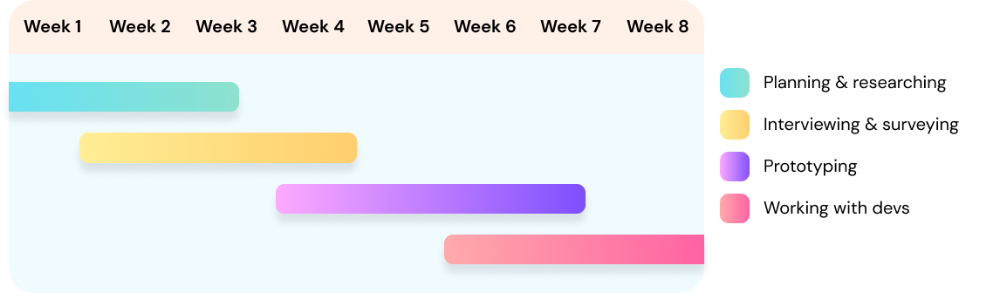
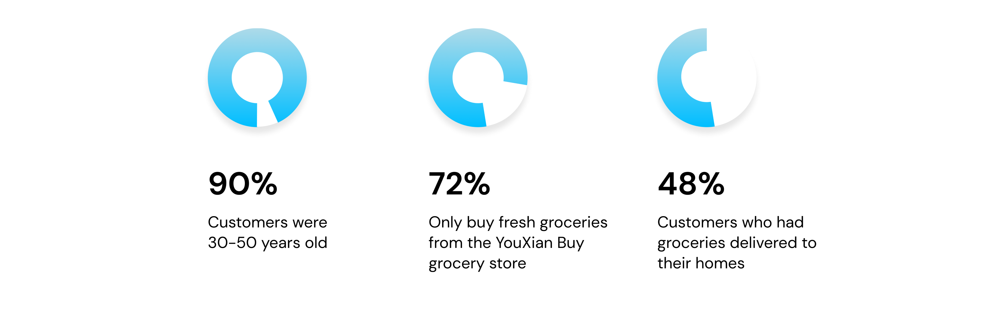

Overview
Get Asian groceries delivered straight to your home.
There are many apps and websites that delivery groceries,
however there aren't many that deliver Asian groceries. I designed this
Asian grocery delivery service's app landing, category selection, and item description pages.
How do I create an intuitive shopping platform for Asian grocery
shoppers while constructing an effective brand image?

Timeline
I worked on the UI/UX for a startup's food delivery app. My goal was to improve accessibility and provide a seamless grocery shopping experience for customers in the Minneapolis, MN area who shop at the local asian grocery stores.
Customer Interviewing & Surveying
I began the project from an analytical perspective, starting out with creating competitor analyses, counting SKU for different item types, and researching about other Asian grocers / Asian grocery delivery services around the United States.
Compiled information on the company's top competitors and comparison of each SKU type.
While collecting data through conducting client interviews, I also created a survey for additional data.
With this information, I found that
